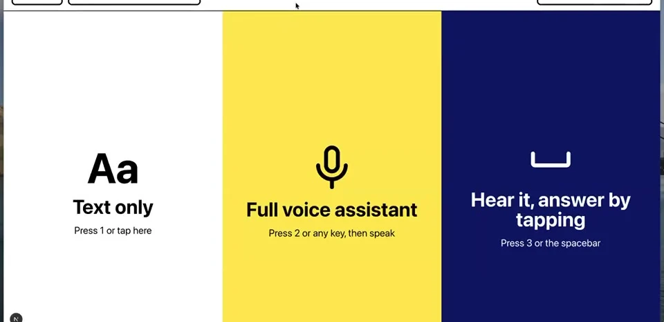

UX design / product storytelling / human-centered technology
Making complex ideas human.
I'm Nkwa, a University of Michigan information student exploring how research, design, and technology can make everyday experiences more inclusive.
Explore selected work Based in Michigan · Open to meaningful product challenges
Selected work
01—03 / 2026
Designing for a more accessible assessment.
Turning the Lions Services client challenge into a tangible, multimodal experience—and a clear story for stakeholders.